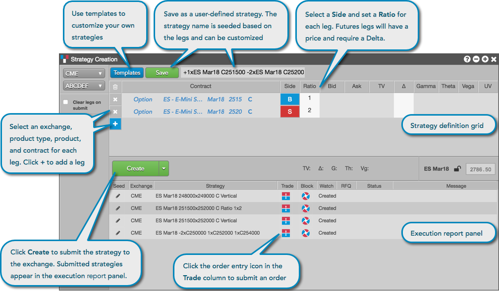
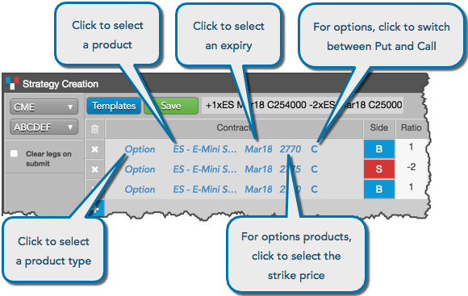
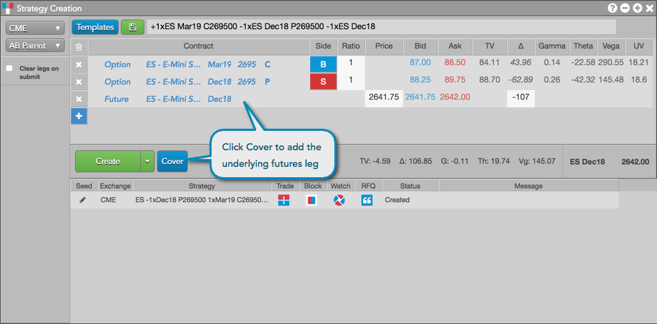
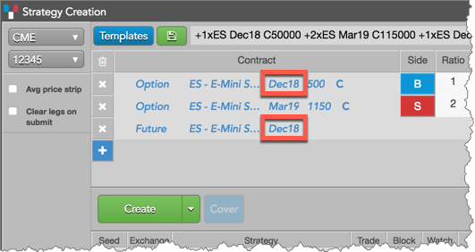

The Strategy Creation widget provides you the ability to create custom, user-defined strategies and submit them to the exchange. User-defined strategies (or structures) are synthetic spread instruments where the legs can be options, futures, or spreads as defined by the exchange where the strategy is submitted. The exchange validates the user-defined strategy and publishes the strategy definition to all marketplace participants. Users can then obtain a price for it via an RFQ (if needed) or directly place an order on that strategy. Rules for supporting user-defined strategies vary by exchange.

After creating a strategy, you can save it as a template in the Strategy Creation widget. The status of each strategy is listed in the execution report panel, which also provides you with the ability to submit orders using the strategy. The widget also supports modifying the user-defined strategies that you created and saved.
The Strategy Creation widget can be opened as follows:
The instrument picker in the Strategy Creation widget enables you to set each part of a contract separately by clicking a field and selecting a value when defining a strategy leg. For options contracts, you can select Puts and Calls and the price for each. The instrument picker also provides access to the Market Explorer, which can be used to select a contract for the strategy leg.

Using the Cover button in Strategy Creation, you can quickly add a futures leg to create a covered or hedged options strategy. The corresponding futures leg is added to the strategy with the current price (and Delta for Advanced Options users), both of which can be edited before sending an RFQ.

For a one or more options legs, clicking Cover adds the underlying instrument at LTP with the same symbol, expiry, and current Delta. However, if all legs share the same underlying instrument but have different expiries, the futures leg is added for the nearest-term expiry selected.

Using the Strategy Creation widget, you can create and trade user-defined strategies for the following exchanges: